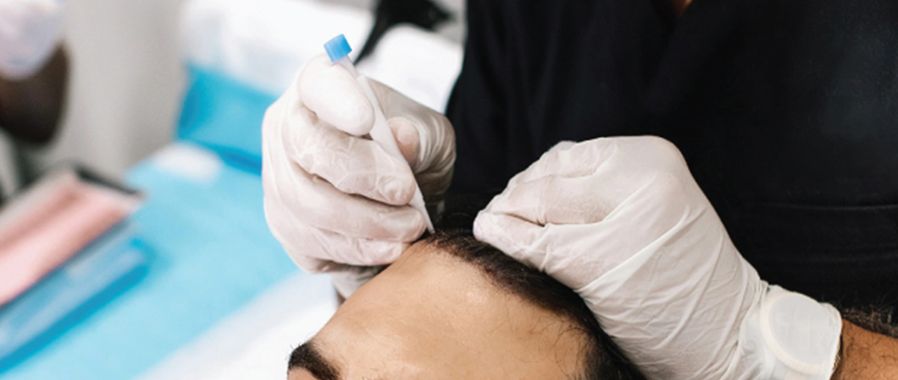
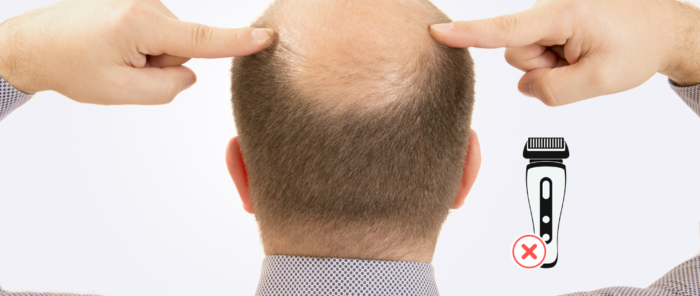
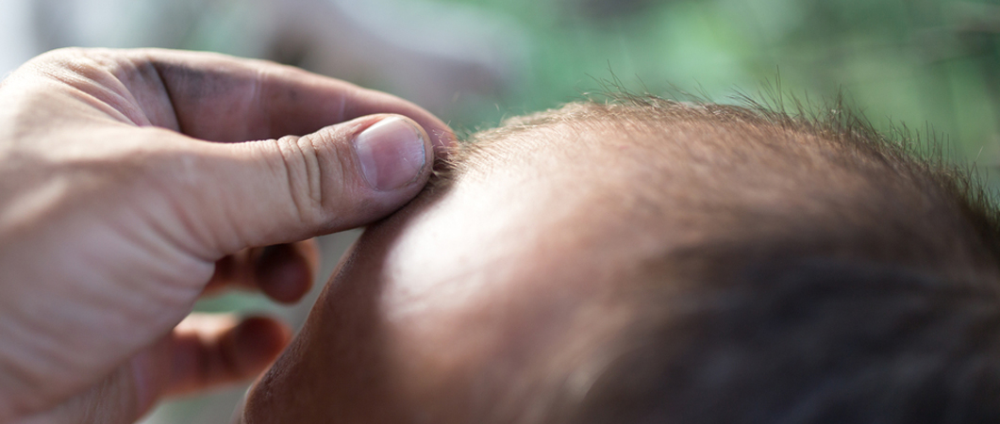

Hair Transplant Publications
Hair transplant is a cosmetic procedure used in recent years with painless and advanced techniques, it is done through the use of other donor areas of the body.

Hair Transplant without shaving in Turkey for women and men
Table of contents
Is Hair Transplant possible without shaving?
If you are willing to have a Hair Transplant and the main thing stopping you is shaving your head, do not worry. In many cases, the transplant can be done without shaving the patient’s head at all.
Hair Transplant without shaving for women in Turkey
Women make up the vast majority of people who want to perform hair transplants without shaving, now they can have a successful hair transplant at reasonable prices without shaving, Ilajak Medical is characterized by the modern techniques, Doctors experience, and customer satisfaction policies.
The Process of Hair Transplant without shaving
Hair Transplant (DHI direct hair transplant) using Choi implanter pen to insert extracted hair follicles.
The process steps are summarized as follows:
- Apply local anesthesia to the donor area
- Use a micro instrument called a “micromotor” to make small round incisions (0.6 - 1.20 mm in diameter) necessary to extract healthy follicles from donor sites after the local anesthetic takes effect.
- Prepare each hair follicle for the transplant.
- Place the extracted follicles in a storage solution to preserve the hair cells.
- Use a transplant pen called a Choi implanter pen to insert follicles.
The Advantages of Hair Transplant without shaving
- No need to shave the hair
- No scars or marks
- Clots and crusts are not visible in the donor area after the surgery.
- The direction of the hair can be controlled during the procedure, which gives a natural look.
- Short recovery period
hair transplant growth after 6 months
 before
before
 after
after
Technique
Choi pens
Grafts Number
3500
After
9 Months
 before
before
 after
after
Technique
DHI
Grafts Number
2100
After
6 Months
 before
before
 after
after
Technique
DHI
Grafts Number
2700
After
7 Months
 before
before
 after
after
Technique
DHI
Grafts Number
3100Grafts
After
10 Months
 before
before
 after
after
Technique
DHI
Grafts Number
2500 Grafts
After
9 Months
The Disadvantages of Hair Transplant without shaving
- It is a rigorous procedure that requires extensive training, experience, and skills of the surgeon.
- In the first version of the DHI hair transplant method, the number of follicles that can be extracted in one session was lower compared to the FUE method, but today due to improvements in the technique, it is possible to extract more follicles, provide patients with the necessary density and coverage of hair to achieve satisfactory results for Hair Transplant.
- Generally, DHI Hair Transplant is taking longer compared to other hair transplant methods.
- DHI hair transplant is a little more expensive than other hair transplants.
Experience of Hair Transplant without shaving
In the first ten days after Hair Transplant without shaving, the roots go through the healing stage, and crust formation is the most important indicator of the healing process, and crust formation is a temporary process that passes after repeated washing with special products after the operation.
You may feel itch because of the newly emerging hair follicles that try to reach the surface of the skin for one to three months depending on the person, you may suffer from hair loss but later, your new hair begins to grow, and the stage is completed after six months.
Usually, the results of a hair transplant without a shave are as successful as other methods in our clinics, which are carried out by our specialized doctors. We have a 100% customer satisfaction policy at reasonable prices.
Read More : Hair Transplantation in Turkey
The difference between Shaved Hair Transplant and Unshaved Hair Transplant
In addition to the above-mentioned differences, pros, and cons, the difference mainly lies in the fact that Hair Transplant without shaving focuses on people who have not lost a very large area of their hair and is more suitable for patients suffering from hair loss, particularly from their heads. However, on the other hand, if a person loses hair in a large area of his head, then it is necessary to shave the scalp. In short, it is based on the size of hair loss in a specific area of the head or in other words the number of hair follicles to be transplanted and if they are few then Hair Transplant without shaving is possible.

The difference between Hair Transplant without shaving and other technique
Hair Transplant without shaving requires more precision than other hair Transplant methods, and the reason for this is that it is difficult to reach the roots as a result of not shaving the hair, patients need to grow their hair a little before the operation.
After determining the donor area, the follicles are extracted so that the donor tissues are hidden between the remaining hairs. The hair follicles are taken using special tools so as not to harm the other tissues, the tools used in the process must be very few and sharp, and this is very important.
The extracted hair follicles are transplanted into the hair loss area, the transplanted hair follicles develop to form new hair follicles from one to three follicles.
Read more : Hair Transplant for Men in Turkey

Is hair transplant without shaving suitable for me?
In the process of Hair Transplant without shaving, there is no need to shave hair, as is the case in other techniques, and this technique is often preferred for hair Transplant in the front hairline and areas of temples. The process of Hair Transplant without shaving is divided into two parts:
- Partially unshaved hair transplant
- Completely unshaved hair transplant
Hair transplant without shaving is a process in which experience plays an important role, for this reason, the clinic in which the operation will take place and the team that will operate are very important as is the case with any other technique used in hair Transplant, contact us to find out if you are a suitable candidate for a hair transplant Without shaving, let's prepare the most suitable hair transplant plan for you with our expert team.
Read More : Eyebrow Transplant in Turkey
Question and answer for hair transplantation
Hair transplant works on transferring real hair follicles form personal donor sites.
Turkey is known for the best Hair Transplant surgeries and surgeons in the world، we in Ilajak Medical work with the best Hair Transplant Specialists.
Some of Hollywood famous actors like 1- John Travolta 2- Mel Gibson 3- Nicolas Cage.
If you have a receding hairline، getting a hair transplant is the best solution. When performed by an experienced، skilled surgeon، a hair transplant can restore your hairline and give back the volume and thickness that you had in the past.
The most common cause of Hair Transplant fail is Post-Operative infection.
The answer is NO، unlike organ transplants، you are your own donor for a hair transplant. If you receive hair، follicles، and tissue from someone else، your body would reject them without immune-suppressant drugs. You donate your hair from what are called your donor sites.
Hair Transplant is the most common procedure done for lowering hairlines. In general، the hair transplant procedure is better for women who are seeking more rounding out than actual lowering although it can and does lower the hairline.
The answer is “Yes، gray hair can be transplanted as safely and successfully as a hair of any color.” A misconception about gray hair is that when hair turns gray it is no longer healthy hair. ... Transplantation of gray hair is successful because gray hair is healthy hair produced by a healthy hair follicle
Hair Transplant is a safe procedure، since the beginning till now no clear or close relationship between cancer and Hair Transplant.
Most hair restoration surgeries are not covered by health insurance. However، there are some circumstances، such as when hair loss is related to a disease، in which insurance may help pay for the procedure therefore you may also want to contact your health insurance، plan provider.
although hair transplants can be carried out for anyone above the age of 18، it is advisable not to have a transplant until the age of 25+. Younger men may not be the best candidates since their hair loss pattern may not yet fully be determined.

Ilajak Medical© | A passion for care
Latest Articles, Health News, Clinical Research, and more.
Keratoconus and cataracts , symptoms and types
What is Keratoconus, How it looks and what are the symptoms? Also, find out Keratoconus’s types and stages , Learn more with ILAJAK Medical.
Best Spa Resorts with Medical Services clinics in Turkey.
In this article, we will learn about the importance of health resorts and the treatment services they offer and the top and famous health & medical resorts in Turkey
Zirconia teeth type and costs in Turkey 2021
Zirconia dental crowns and bridges are used to treat and protect the affected teeth due to decay or fractures, etc, In this article we will learn about the advantages and drawbacks of Zirconia Crowns and bridges
Benefits of porcelain teeth and costs in Turkey 2021
Porcelain crowns and veneers are used to strengthen and protect damaged teeth due to decay or cracks or any other reason. In this article, we will discover dental porcelain and its advantages and risks.